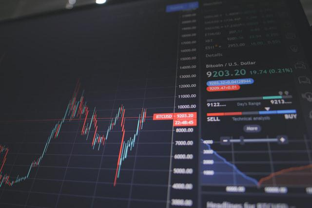

Intro to FIRE in the Netherlands
Hello!
My idea with this post is to share a bit of the information I have collected and throw at you the information you need to get started without having to think too much.
Investment is something that doesn't appeal to me, so I'm trying to figure it out effectively, so I don't have to think about it in the future.
ATTENTION
I'm not a professional at this, and I don't like it either, so I can't give you any guarantees of anything. Take it as an introduction to the topic. And explore further yourself.
Any questions, contributions or corrections are welcome, there is a comments section at end or you can find me on twitter.
Introduction
"Financial Independence, Retire Early" is a movement whose objective says: accumulate assets, until you can live on the passive income they generate or sell them slowly. The idea is to maximize savings, reduce expenses and find different ways to increase revenue.
It is theorized that the higher the percentage you save of your salary, the faster you will be able to retire.
This is not about getting rich instantly, this is about retiring early, i.e. in less time than it takes to reach a pension.
It is not about having a ton of money either, but that your assets produce more or less cover the expenses you now have.
To throw a number, I would say that it takes an average of 20 years; this is much less than a pension. But this varies depending on your situation.
Beyond that, it is a great complement to what your pension will be and is better than having your money standing still.
You can read more in the subreddit /r/financialindependance faq.
Make sure you have no debt and have a cushion of money, at least to be able to live for 6 months, before starting.
Investments
I am going to focus on where to invest.
In general, people do not know what can be done with the savings, in addition to having them in the bank account.
So... where to invest? The answer is simple:
In the stock market. Yes, shares.
The stock market has the highest return margin (~7.5% legend has it), better than real estate, and others [0]. We control the risk investing in a controlled way, and aiming long term which is what is explained in this post. Canadian Ben Felix explains, for example, the cost associated with buying a home in this video. And in the book Simple path to wealth expands a lot on the subject of index funds, highly recommended.

But we are not going to invest in the way that one thinks of stocks, having to look at the cell phone screen every day, not that please! We'll see later.
How much do I need to retire
The calculation is 25 times your annual expenses [1]
Examples:
- I use €40k per year to live. So €40k * 25 = €1M
- I have €1M in savings. So I can spend €40k per year (4%).
That 4% appears in many places mentioned.
You can read "The Shockingly Simple Math Behind Early Retirement" for more info.
Where do I invest?
Basically we will invest in ETFs or index funds, which are more or less the same, long term does not matter much the difference.
The index funds are a set of shares of multiple companies.
Back in the '70s, a certain John C. Bogle said that you had to build an index that mimics the performance of the market in general in the long term. If the market in a long period of time generates 10% interest, that is what we will aim for. He said that the market is always growing. He then founded The Vanguard Group, in which the owners are the clients themselves, that is, if you have shares of the index you are partly the owner.
Bogle was against speculation, which is short-sighted and focused on the price of the shares. On the other hand, in the long term we obtain a profit based on to the business itself, and the people who run it by betting it will grow.
How did you imitate the market? Select a set of many companies.
Blog then launched its first index fund tied to the S&P500, which are the top performing 500 American companies
The rest is history, and the index became wildly popular.
Today there are many types of funds. I like ESG which are sustainable funds. It is interesting to point out that, the same money, that is going to feed us, can have an impact (positive or negative) on the world.
How to invest
Being in the Netherlands is very easy, it can be through the bank's app, or using Trading 212 (T212). DeGiro is also another popular alternative.
In T212 they will ask a proof of address, which can be the water bill for example. In theory, they open an account that is yours, and they cannot touch it, this is protected by the European Union laws. I still have a hard time trusting those apps (as an argentinian trust is hard).
If you are going to open an account in T212, use my referral link which give us a share of up to €100 each.
Depending on the platform you choose, you will have a range of different offers, and their costs vary. But the cost issue is negligible, so it doesn't matter much.
Next, I leave a list that you can use as reference, depending on your platform:
| Platform | Index Fund |
|---|---|
| T212 | 100% VWRL FTSE All-World Index (IE00B3RBWM25) |
| ING Zelf op de beurs | 88% NT World MSCI World Custom ESG Index (NL0011225305) + 12% NT EM MSCI Emerging Markets Custom ESG Index (NL0011515424) |
| ABN Amro Zelf Beleggen Basis | 88% NT World MSCI World Custom ESG Index (NL0011225305) + 12% NT EM MSCI Emerging Markets Custom ESG Index (NL0011515424) |
| Rabobank Zelf Beleggen | 88% NT World MSCI World Custom ESG Index (NL0011225305) + 12% NT EM MSCI Emerging Markets Custom ESG Index (NL0011515424) |
The platform you choose, you search for it in Google, and it will take you where to click to set up or create an account.
You may have noticed that for banks it is the same fund the Northern Trust (NT), this is so, because they are registered in the Netherlands, and I don't know what mambo they have that we end up paying less taxes. (Updated 2021-03-22).
They are also ESG, which stands for "Environmental, social and corporate governance" and that's great.
T212 does not have the NT funds available, but the Vanguard ones are the most recommended in most of the world and they are good. I don't know if they have ESG.
The percentage that appears is how much you have to invest on each one. If you're going to invest €100, then €88 (88%) goes to World Custom and €12 (12%) to Emerging Market.
Every month separate a part of your salary, and you buy again in the same funds with the same strategy.
To see costs, how much we will get back, and more information, a Dutch made the fantastic website indexfondsenvergelijken.nl.
Taxes
You will have to pay taxes on all your assets in the Netherlands, forget about that and better not fight against it.
Your assets are going to have to be reported. Whether you are using the bank or a platform, Every year, in December, they will send you a report with the value of your investments up to that moment. That value is what you will have to enter in the affidavit for that year, in the wealth tax (box 3) part. Maybe they give you some benefit for buying the NT for example, but I still don't know how it works, At the moment, I only know that there is some kind of benefit.
The first €30k if you are single or €60k for couples are tax free. These values may be updated over the years, so keep an eye on the new policies. Tea they will collect taxes only on the amount that exceeds that limit.
If you have €75k, you will be taxed on €15k only.
This is the table of 2019
| Braket | Tax | Example |
|---|---|---|
| €0-€71,650 | 0.58% | €50,000 -> €290 |
| €71,651-989,736 | 1.34% | €300,000 -> €4,020 |
| > €989,737 | 1.68% | €1,100,000 -> €18,480 |
Get money from investments
Investment funds, bonds, stock, and others, usually produce dividends, which is the distribution of profits to the shareholders.
As you are going to be one, that money will come to you. In general, they deposit it in the platform you use.
The idea is that once you reach your goal, you live off the dividends, but sometimes you will also have to sell a small part.
Let's say you have to take out 4% of your portfolio per year. If the dividends give you 2.5%, you're going to have to sell 1.5%. But losing that amount shouldn't matter, because you would expect the market to grow again and cover you.
In the Netherlands, investment funds are required to pay you dividends at least once a year, during the first 8 months of the year.
Northern Trust fund, for example, usually pays them in February.
You don't live in the Netherlands
If you are in the USA, read the book Simple path to Wealth that will guide you.
If you are in another European country you can ask for advice at r/EuropeFIRE.
But the principle is the same.
Summary
- Open an investment account in your favourite bank or app.
- Invest in Index Funds (Northern Trust or Vanguard).
- Make it a habit (schedule your app to do it automatically) and forget about it, it doesn't matter if the market falls, DON'T SELL.
Research pending
- 30% ruling does not need to declare savings and investments? Apparently not
- Investing in "green" stocks increases our maximum to €50k?
- How is the annual rebalancing done?
Updates
2021-03-22
- A friend confirmed to me that if you have the ruling 30% you do not pay taxes in BOX 3 for investments or savings, after talking with the ABN.
- It is possible to leave the bank account open if you are going to live in another country, that is to say that the investments you can keep driving them there.
- Benefit of having index fund registered in the Netherlands:
The Northern Trust indexfunds are domiciled in the Netherlands and thus avoid dividend leakage which increases their returns about 0.25% per year as compared with a similar indexfund or ETF domiciled in Ireland or Luxembourg (as most in Europe are). Dividend leakage means you'd pay capital gains taxes twice on the same gains. A 0.25% difference isn't the end of the world if you take into account you do pay service fees at ABN AMRO and Rabobank while for a similar ETF at DeGiro you wouldn't pay a service fee.
2022-01-14
- So far my bank reports a growth of 20% since I started mid 2020 and I've kept the same strategy so far.
Recursos
Photo by Nick Chong on Unsplash
Hey hi 👋
If you are interested in what I write you can follow me on twitter.